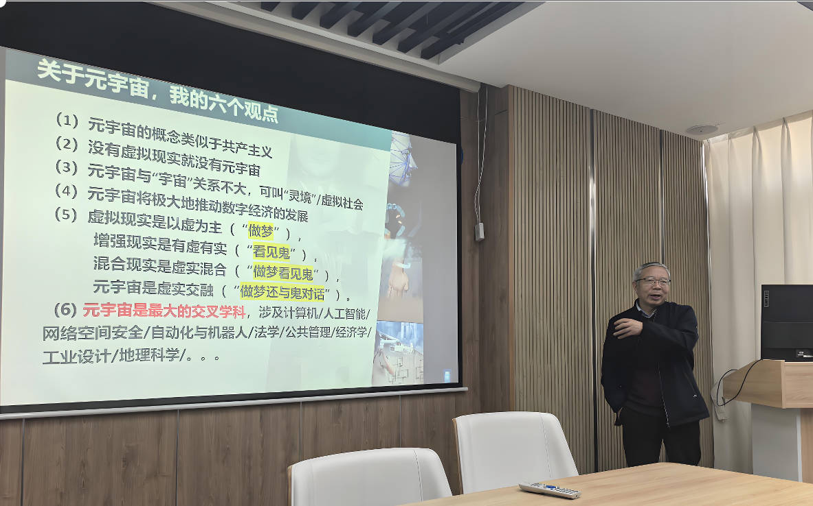
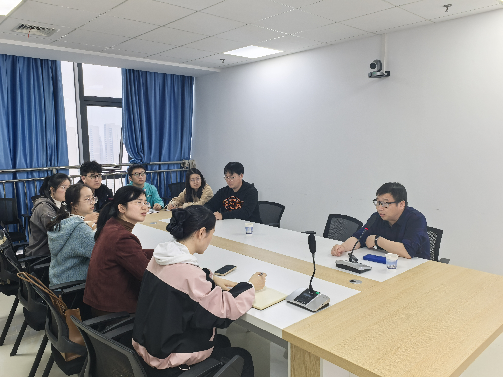

- 2024.12-2026.12 芜湖市科技计划项目：电动汽车接入下智能电网的安全控制,主持
- 2023.01-2026.12 江苏省自然科学基金面上项目：网络攻击下信息物理系统的记忆型事件触发容侵控制（BK20231288）,主持
- 2021.01-2023.12 江苏省碳达峰碳中和科技创新专项资金项目——重大科技成果转化项目，主持
- 2023.01-2026.12 国家自然基金面上项目：基于记忆型事件触发机制的信息物理系统的安全控制（62273183），主持
- 2015.01-2018.12 国家自然基金面上项目：基于网络动态的分布式网络化互联系统的协同控制（61473156），主持
- 2019.01-2020.12 江苏省多运动体信息感知与协同控制重点实验室开放课题：基于多传感器融合和事件触发的网络化控制系统的安全控制，主持
- 2018.01-2021.12 江苏省“青蓝工程”中青年学术带头人培养对象资助项目，主持
- 2014.01-2016.12 教育部博士点新教师基金：计及网络 QoS 和系统故障的网络化互联系统的可靠性控制研究（011040159 ），主持
- 2014.01-2015.12 中国博士后基金：基于网络动态的分布式网络化互联系统的协同控制（61473156），主持
- 2013.01-2015.12 江苏省博士后基金（A类资助）：基于混合触发机制的网络化互联系统的可靠性控制研究（1301009A），主持
- 2010.01-2012.12 江苏省高校自然科学基金：网络控制系统的容错控制与综合调度，主持
- 2010.01-2012.12 国家自然基金青年基金：网络控制系统的随机分析及量化控制研究（60904013），主要参与
- 2008.01-2010.12 国家自然基金面上项目：稀土钨热电子发射式高温静电除尘技术研究（56766049），主要参与

基本情况
顾洲，博士，教授，博士生导师，现就职于安徽工程大学电气工程学院。江苏省“青蓝工程”学术带头人，IEEE高级会员，IEEE EPS专委会理事，中国自动化学会会员。获2023年度河南省科学技术奖三等奖（自然科学类）。近年来在Automatica、IEEE Transactions on Cybernetics、IEEE Transactions on Fuzzy Systems、IEEE Transactions on Industrial Informatics、IEEE Transactions on Systems, Man Cybernetics-Systems、 IEEE Transactions on Intelligent Transportation Systems、IEEE Transactions on Fuzzy Systems、IEEE Transactions on Smart Grid、中国科学等刊物上发表SCI论文100余篇。发表在《IEEE Systems Journal》期刊的论文获得IEEE Systems Council 颁发的2022年度最佳论文奖（Best Paper Awards），入选2022，2023，2024年度斯坦福大学发布的“全球前2%顶尖科学家榜单”。
研究方向
💡 网络控制系统的分析与综合
💡 智能电网的建模与控制
💡 智能车联网的建模与控制
教育经历
2007.04-2010.06，博士，南京航空航天大学，专业：控制理论与控制工程
2004.09-2007.03，硕士，南京航空航天大学，专业：控制理论与控制工程
1993.09-1997.06，学士，华北电力大学，专业：自动控制
工作经历
2024.05-今 安徽工程大学 电气工程学院（集成电路学院）自动化系
2021.09-2023.07 江苏省常州市新北区经发局、三井街道，副局长（挂职）
2019.07-2024.04 南京林业大学 智能信息处理与控制研究所，所长
2013.02-2024.04 南京林业大学 机械电子工程学院自动化系，副教授（2011-2017）/教授，系主任
2013.04-2016.02 东南大学 自动化学院，博士后
1999.09-2013.02 南京师范大学 能源与机械工程学院，能环系, 讲师/副教授，系主任
1997.08-1999.08 江苏省电力建设第一工程公司，技术员
💡获2024年度江苏省自动化学会科学技术奖二等奖：信息物理系统的记忆型按需通信与模糊控制及应用
💡获2023年度河南省科学技术奖三等奖（自然科学类）：受限复杂动态系统的分析与控制受限复杂动态系统的分析与控制
💡入选2023年斯坦福大学发布的“全球前2%顶尖科学家榜单
💡论文 Zhou Gu, Shen Yan, C. K. Ahn, Dong Yue, Xiangpeng Xie, "Event-Triggered Dissipative Tracking Control of Networked Control Systems With Distributed Communication Delay", IEEE Systems Journal, vol. 16, no. 2, pp. 3320-3330, June 2022. 获得IEEE Systems Council 颁发的2022年度最佳论文奖
💡2018年入选江苏省“青蓝工程”中青年学术带头人
😜 需要关注的论文 Important Papers
主要老师
博士生
- 范玉健（2023级）
- 尹婷婷（2020级）
- 孙翔（2019级）
- 穆秀峰（2019级）
硕士生
- 2024级： 蔡余慧，程汪锐，丁鹏程
- 2023级： 朱媛媛，景思淼，仲智阳，徐达铭 （因工作调整，本级学生在研一阶段已调给其他老师）
- 2022级： 吴佳函，曹睿彦
- 2021级： 马博文
- 2020级： 黄雪阳，季博威
- 2019级： 孙彪，张笑
- 2018级： 周晓红，孙翔
- 2016级： 赵磊
- 2015级： 赵欢
- 2014级： 杨玲慧，蔡举，薛秋香
- 2013级： 庄宝春，史广涛
- 2025年4月15日，邀请南京信息工程大学人工智能学院院长 潘志庚教授 做学术交流, 报告题目：AI赋能元宇宙及应用，报告地点：A座313会议室。 
- 2025年1月17日-19日，调研濉溪县多家企业，寻求横向合作。
- 筹办EEEAC2025国际会议，会议时间为2025年8月8日-10日，会议录用论文EI, Scopus收录检索，会议地点：中国-芜湖。欢迎广大科研工作者踊跃投稿支持！详情点击 EEEAC2025。
- 2024年11月14日邀请斯威本大学张先明教授来我课题组做学术交流。 
- 顾洲以程序委员会主席身份出席国际会议ACSAT 2024, 并做大会报告。